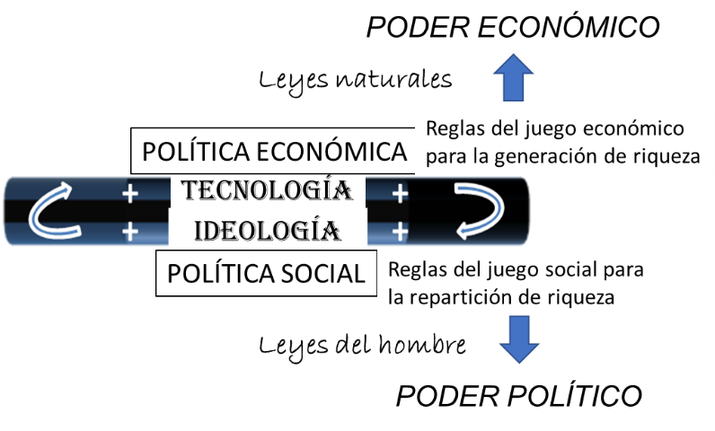
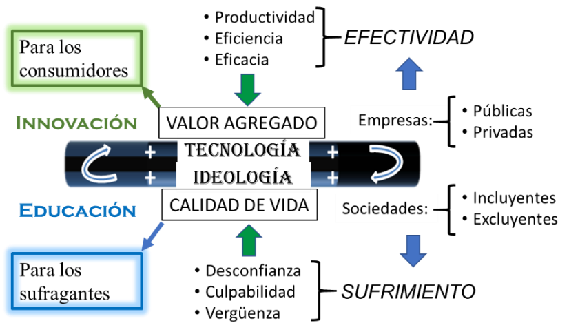
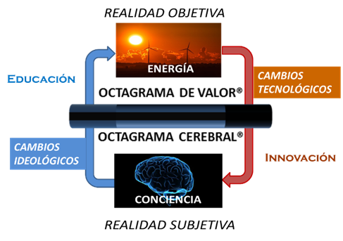

Artículos de interés
Reglas del juego en los negocios
El poder político de los ciudadanos y el poder económico de los consumidores
Las políticas económicas y sociales definen las reglas del juego de los negocios. En los últimos años, los avances tecnológicos son tan rápidos, que da la impresión que las empresas aventajan a las regulaciones a las que tendrían que adherirse.
En política económica, la mejor ficción jamás inventada es el dinero. Si bien nació como una medida objetiva del valor de los recursos que intercambiamos, con el fin de facilitar las transacciones, eventualmente se convirtió en un símbolo de poder y estatus.
En política social, la mejor ficción es la constitución política de cada pueblo. Las narrativas constitucionales y las leyes que emanan de ellas no proceden de la divinidad, sino que son una invención del hombre. Consecuentemente, las leyes son perfectibles y pueden estar en perpetuo cambio, según se vaya observando lo que funciona y lo que no. Sin embargo, un cambio abrupto de la narrativa puede hacer que una sociedad colapse.

Los parlamentos y partidos políticos se dividen en conservadores y liberales. Los primeros privilegian los cambios muy lentos y los segundos prefieren transformaciones más dinámicas. El que uno u otro grupo detente el poder, dependerá de lo resiliente de su pueblo.
Las leyes son las reglas del juego. Son ficciones inventadas para procurar la distribución equitativa de los recursos.
- Legislativo: Hacer las leyes.
- Ejecutivo: Vigilar que se cumplan las leyes.
- Judicial: Juzgar a los que no cumplen las leyes.
Sólo la división de poderes propicia mejores condiciones para la distribución de la riqueza al evitar que el poder se concentre en un solo agente.
Existen dos tipos de público en el entorno político y económico: los ciudadanos y los consumidores.
En la competencia por recursos, la gente tiene la responsabilidad de elegir buenos gobernantes y buenos productos para consumir. Ambas decisiones comúnmente son irracionales, guiadas por las emociones e influidas por el marketing.
La educación es fundamental para tomar buenas decisiones en lo económico y en lo político y esto lo saben bien los tiranos que marginan a sus gobernados en materia educativa. Generalmente los políticos no narran la verdad, sino aquello que a la gente le gustaría que fuera verdad, y los vendedores tratan de imponer su verdad acerca de las ventajas de su producto o servicio.
En ambos casos, el ingrediente básico es la confianza. En el primero, la confianza en las instituciones representativas. En el segundo, la confianza en las instituciones lucrativas.
De lo anterior se desprende la importancia de descubrir la verdad mediante la introspección y el razonamiento crítico, competencias que se enfatizan en el modelo del Octagrama Cerebral®, e indispensables para depositar la confianza en la institución correcta, la que mejor cuide nuestros intereses.

La historia no es acerca del pasado, sino del cambio. La historia nos deja lecciones para no repetir las cosas malas y aprender acerca de las cosas buenas.
El progreso de la humanidad se ha logrado induciendo cambios tecnológicos y cambios ideológicos a lo largo de la historia. Los primeros son el resultado de la innovación y los segundos, de la educación.

La innovación puede generar tecnologías deseables, que generan valor (energía por fusión nuclear), o indeseables, que destruyen valor (bombas por fisión nuclear). Las primeras disminuyen la entropía, las segundas la aumentan.
La educación puede generar ideologías deseables, que inducen colaboración constructiva (división de poderes) o indeseables, que inducen colaboración destructiva (concentración del poder). Las primeras promueven sistemas de gobierno democráticos, las segundas, autoritarios.
La estatización de la economía, no ofrece incentivos para la creación de riqueza. Los gobiernos autoritarios invariablemente expropian la riqueza de un país para su propio beneficio.
¿Por qué las democracias duran tan poco en los países latinoamericanos?
¿Por qué estos países no son soberanos tecnológicamente hablando?
La innovación requiere del estímulo de hacerse ricos con los inventos. Esta es la motivación para que inventemos cosas.
Sólo el libre mercado puede mejorar la generación de riqueza, pues promueve la iniciativa privada otorgando a los ciudadanos la posibilidad de hacerse ricos con sus inventos.
La democracia, como el desarrollo tecnológico, requiere de mecanismos de autocorrección. Estos no existen ni en las iglesias ni en los gobiernos autocráticos, que se ven a sí mismos como infalibles. No hay mecanismos para checar si algo es verdadero o falso.
La democracia es acerca de conversaciones en las que las narrativas y los relatos se cuestionan continuamente y con ello acercarse a la verdad. La ciencia y la tecnología trabajan con realidades objetivas, con hipótesis que pueden falsificarse. Las iglesias y los gobiernos autocráticos trabajan con realidades subjetivas, mitos imaginados que nunca se cuestionan.
Los mitos, sin embargo, sirven para crear orden a partir del caos, por medio de creencias que todos comparten. En las organizaciones eclesiásticas no hay espacio para la innovación y, por tanto, han mantenido sus creencias intactas durante siglos blindándolas del riesgo de que sus feligreses se retractaran cuando conocieran una verdad distinta a la que sostienen.
La innovación requiere romper con modelos mentales, pero estos son los que mantienen el orden social. En Latinoamérica no se fomenta la educación ni la innovación cuyos pilares son la verdad y la realidad objetiva. Preferimos la realidad subjetiva que sostiene la esperanza en una vida mejor que prometen los gobiernos autoritarios.